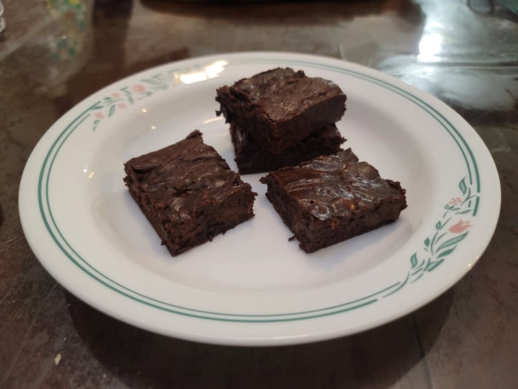

Brownies

Ingredients:
- 10 tbsp Unsalted Butter
- 1 1/4 cup Sugar
- 3/4 cup + 2 tbsp Cocoa powder
- 1/4 tsp Salt
- 1 tsp Vanilla extract
- 2 Large eggs
- 1/2 cup Flour
- Optional: 2/3 cup Any filling: nuts, chocolate chips, etc.
Instructions:
- Preheat an oven to 325 degrees Fahrenheit. Line the bottom and sides of an 8-inch square baking pan with parchment paper.
- Prepare a double boiler. Place the butter, sugar, cocoa powder, and salt into the bowl of the double boiler. Stir the mixture until the butter is melted and it is thoroughly mixed. Remove the bowl from heat and let rest for 3 to 5 minutes until it is not hot. If not using a double broiler, simply melt the butter in the microwave and then combine with the sugar, cocoa, and salt.
- Mix in the vanilla and then the eggs until thoroughly incorporated. Mix in the flour well. Then beat the batter together with a plastic spatula until the batter is very thick. It should be pulling away from the sides of the bowl.
- Stir in any optional fillings if desired. Then spread the batter evenly into the baking pan.
- Place the brownies into the oven. For gooier, fudgier brownies, bake the brownies for 20 to 25 minutes or until a toothpick can be inserted into the center and come out with a few moist crumbs. For more cakey brownies, bake for 30-35 minutes. Remove from the oven when done to your likeness.
- Let cool completely before removing from the pan and cutting into 16 pieces.